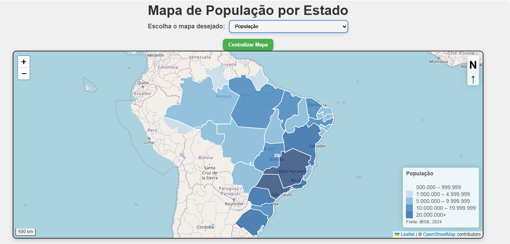
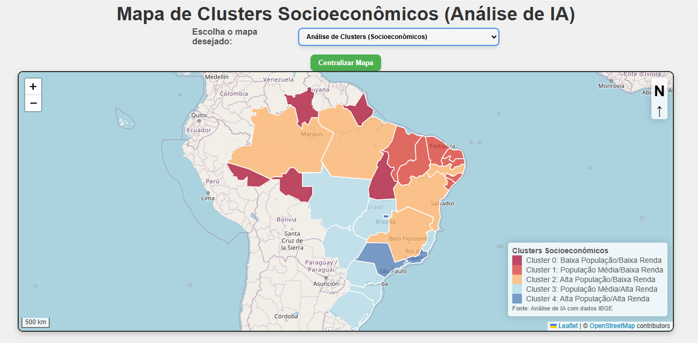
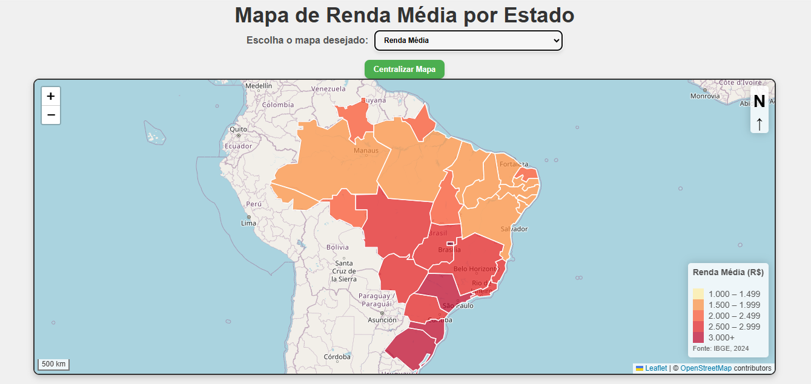
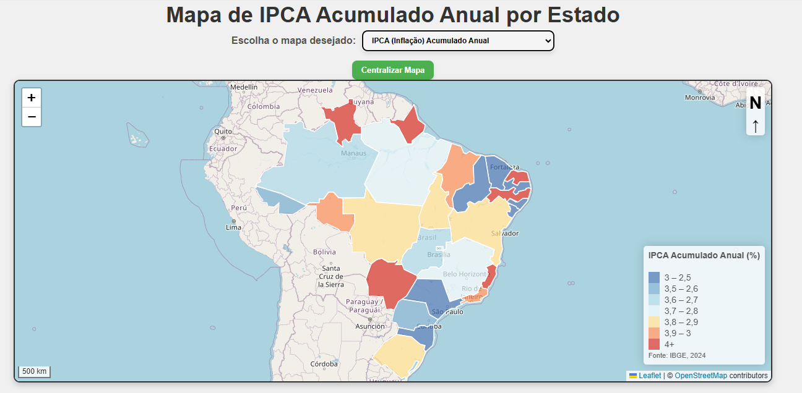
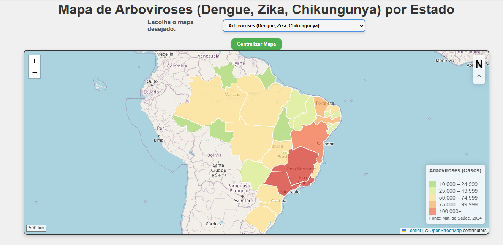
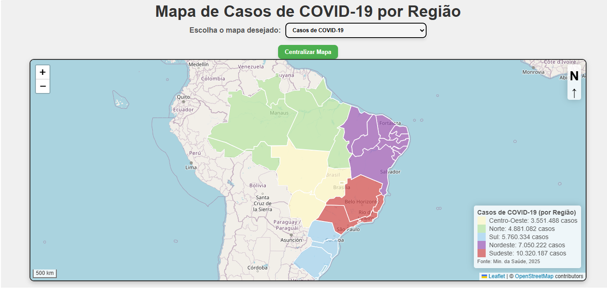
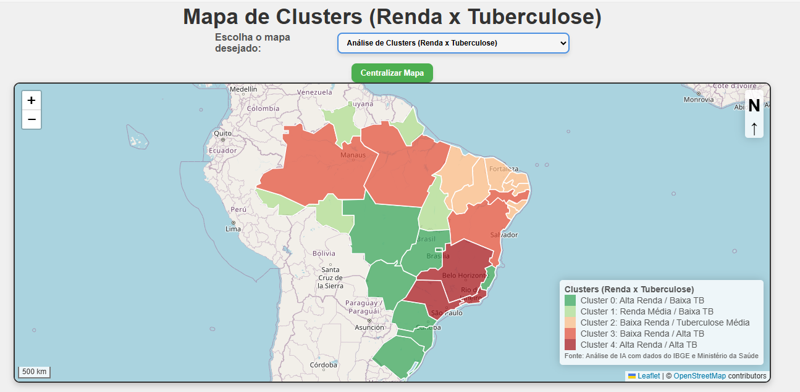
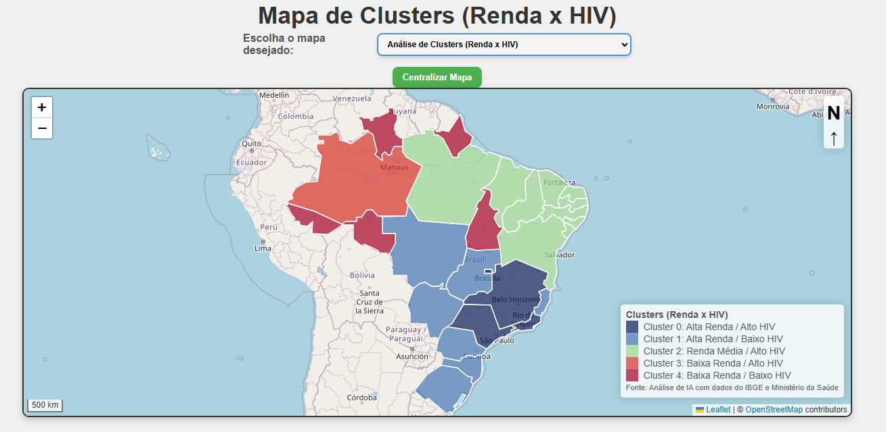
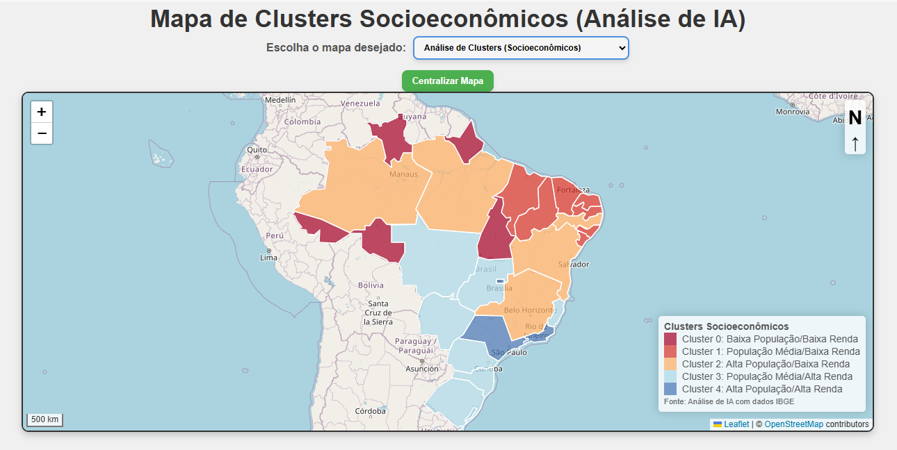

RESUMO
O presente artigo aborda o desenvolvimento e a implementação de uma metodologia voltada à integração de técnicas de Inteligência Artificial (IA) ao tratamento de grandes volumes de dados abertos no âmbito do território brasileiro. O objetivo central é superar os modelos convencionais de representação geográfica estática por meio do emprego de algoritmos de aprendizado de máquina e IA generativa aptos a identificar padrões latentes, automatizar a construção analítica e gerar representações cartográficas funcionais. Como aplicação prática, desenvolveu-se um protótipo em ambiente web funcional que gera cartogramas temáticos interativos, aplicando análises de agrupamento (clustering) sobre indicadores socioeconômicos e de saúde pública. Constatou-se que a IA generativa capturou com precisão a geografia territorial desejada e inseriu sistematicamente os elementos essenciais de composição cartográfica (título da carta, escala, convenção cartográfica, fonte e orientação ao norte). Os resultados obtidos ratificam a viabilidade técnica da proposta e evidenciam o papel estratégico da inteligência artificial no aprimoramento da análise espacial e no suporte à formulação de políticas públicas.
Palavras-chave: Cartografia Temática; Inteligência Artificial; Geoinformática; Dados Públicos; Aprendizado de Máquina.
ABSTRACT
This article addresses the development and implementation of a methodology aimed at integrating Artificial Intelligence (AI) techniques into the processing of large volumes of open data within the Brazilian territory. The main objective is to transcend conventional models of static geographic representation through the use of machine learning algorithms and generative AI capable of identifying latent patterns, automating analytical construction, and generating functional cartographic representations. As a practical application, a functional web-based prototype was developed to generate interactive thematic cartograms, applying cluster analysis to socioeconomic and public health indicators. It was observed that generative AI successfully captured the desired territorial geography and systematically included all basic cartographic elements (map title, scale, cartographic legend title, source, and north arrow). The results confirm the technical feasibility of the proposal and highlight the strategic role of artificial intelligence in enhancing spatial analysis and supporting public policy formulation.
Keywords: Thematic Cartography; Artificial Intelligence; Geoinformatics; Public Data; Machine Learning.
RESUMEN
Este artículo aborda el desarrollo e implementación de una metodología orientada a integrar técnicas de Inteligencia Artificial (IA) en el procesamiento de grandes volúmenes de datos abiertos dentro del territorio brasileño. El objetivo central es superar los modelos convencionales de representación geográfica estática mediante el uso de algoritmos de aprendizaje automático e IA generativa capaces de identificar patrones latentes, automatizar la construcción analítica y generar representaciones cartográficas funcionales. Como aplicación práctica, se desarrolló un prototipo web funcional que genera cartogramas temáticos interactivos, aplicando análisis de conglomerados (clustering) sobre indicadores socioeconómicos y de salud pública. Se constató que la IA generativa capturó con precisión la geografía territorial deseada e insertó sistemáticamente los elementos cartográficos básicos (título de la carta, escala, título de la convención cartográfica, fuente y orientación al norte). Los resultados confirman la viabilidad técnica de la propuesta y destacan el papel estratégico de la inteligencia artificial en el análisis espacial y el apoyo a las políticas públicas.
Palabras clave: Cartografía Temática; Inteligencia Artificial; Geoinformación; Datos Públicos; Aprendizaje Automático.
A representação cartográfica consolida-se, historicamente, como um pilar indispensável para a apreensão e a gestão das dinâmicas territoriais (Harvey, 2008). Contudo, a contemporaneidade é marcada por uma expansão exponencial na produção de dados geoespaciais e socioeconômicos, impulsionada por instituições públicas de pesquisa como o Instituto Brasileiro de Geografia e Estatística (IBGE) e plataformas governamentais abertas (Câmara et al., 2001). Essa profusão de dados impõe severos limites aos métodos tradicionais de mapeamento, cuja natureza predominantemente estática revela-se insuficiente para capturar as interações espaciais fluidas e as assimetrias regionais características de um país com as dimensões e heterogeneidades do Brasil (Santos, 2006).
Diante desse desafio conceitual e operacional, a Inteligência Artificial (IA) surge como um vetor metodológico promissor para transformar grandes massas de dados brutos em conhecimento espacial estruturado (Russell; Norvig, 2013). O emprego de algoritmos de aprendizado de máquina e modelos de IA generativa permite ultrapassar a simples visualização de contingências demográficas ou sanitárias, viabilizando a identificação de correlações não lineares entre múltiplos indicadores econômicos, populacionais e de infraestrutura. A integração entre geoinformação e algoritmos inteligentes fomenta a criação de ferramentas analíticas capazes de revelar narrativas geopolíticas ocultas na escala territorial.
Este trabalho fundamenta-se na convergência teórica e prática entre a Ciência da Informação Geográfica (GIScience), a Ciência de Dados e a Inteligência Artificial. A GIScience, cujos preceitos estruturantes foram consolidados por Goodchild (1992), dedica-se ao estudo sistemático dos fenômenos geográficos mediado pelo processamento computacional. Complementarmente, Longley et al. (2013) sublinham que os Sistemas de Informação Geográfica (SIG) evoluíram de plataformas de armazenamento vetorial para ambientes complexos de modelagem espacial, essenciais para a tomada de decisão territorial.
No âmbito da Inteligência Artificial, Russell e Norvig (2013) caracterizam o aprendizado de máquina como um conjunto de algoritmos voltados à extração automática de padrões a partir de dados heterogêneos. Quando associadas ao domínio espacial, essas técnicas dão origem à Geointeligência ou Geospatial Artificial Intelligence (GeoAI), campo emergente explorado por Janowicz et al. (2020). A aplicação de algoritmos não supervisionados de agrupamento (clustering) destaca-se por permitir a sumarização de unidades territoriais segundo perfis multidimensionais de similaridade socioeconômica e sanitária, sem a necessidade de rotulações prévias rígidas (Mitchell, 1997).
Estudos focados no uso de dados abertos para o planejamento governamental (Silva, 2021) e análises demográficas espaciais (Oliveira; Souza, 2019) reforçam a relevância de abordagens computacionais avançadas na formulação de políticas públicas focalizadas. Assim, o mapeamento temático contemporâneo beneficia-se de bibliotecas e ferramentas web de código aberto, tais como o Leaflet, que democratizam a difusão de painéis interativos de análise territorial (Meneghini; Faria, 2020). Essa articulação metodológica responde à necessidade de ultrapassar mapas estáticos, promovendo visualizações dinâmicas que ampliam a compreensibilidade de fenômenos espaciais complexos.
A investigação estruturou-se em etapas interligadas, compreendendo a aquisição de dados, a modelagem via algoritmos de IA, a arquitetura de engenharia de prompts para mitigação da perda de contexto e o desenvolvimento da aplicação web interativa.
A etapa inicial envolveu a extração e a normalização de bases públicas disponibilizadas pelo IBGE e por secretarias estaduais e federais de saúde. Para o suporte vetorial, empregou-se o formato TopoJSON, que oferece uma representação simplificada e highly eficiente da geometria das unidades federativas brasileiras, otimizada para requisições em ambiente web. Os dados tabulares socioeconômicos (renda domiciliar, densidade populacional) e sanitários (incidência de patologias epidemiológicas como dengue, tuberculose e infecção por HIV) foram organizados em estruturas matriciais e convertidos para o formato JSON, vinculando cada estado à sua respectiva série de atributos.
Um dos maiores gargalos operacionais no uso de Modelos de Linguagem de Grande Porte (LLMs) para o desenvolvimento de código complexo e geração de cartografia temática reside na tendência de alucinação, esquecimento de diretrizes anteriores e perda de integridade dos dados durante longas interações. Para contornar essa limitação e garantir a correta execução de todas as requisições, adotou-se uma arquitetura rigorosa baseada nos seguintes pilares:
A etapa de inteligência computacional centrou-se em modelos não supervisionados de clustering. Tais algoritmos foram configurados para identificar grupos homogêneos de estados com base na proximidade euclidiana entre suas variáveis normalizadas. A implementação lógica deu-se primordialmente na linguagem JavaScript, exigindo o desenvolvimento de rotinas customizadas para o cálculo de matrizes de distância e atribuição de partições. Os centros dos agrupamentos e as classificações resultantes foram pré-computados e consolidados em estruturas de dados estáticas, otimizando o tempo de resposta durante a renderização no navegador.
O desenvolvimento da interface utilizou as linguagens padrão da web: HTML para marcação estrutural, CSS para estilização visual e JavaScript para a dinâmica interativa. Utilizou-se a biblioteca Leaflet para a manipulação dos mapas vetoriais. As principais funções executadas pelo script cliente incluem:
A avaliação experimental do sistema construído confirmou a eficácia da integração proposta. A aplicação web permitiu a exploração interativa de diferentes dimensões socioeconômicas e sanitárias por unidade da federação. A análise das partições espaciais geradas pelos algoritmos de IA demonstrou que a categorização baseada em aprendizado de máquina revela descontinuidades e contiguidades que não coincidem estritamente com as divisões regionalizadas tradicionais (como Norte, Nordeste e Sudeste).
Ademais, ao avaliar especificamente a capacidade da IA generativa na síntese e geração das cartas temáticas, constatou-se um elevado nível de precisão no atendimento aos pré-requisitos cartográficos formais (Barbosa, 1980; Morais, 1995). A IA conseguiu capturar com rigor a geografia territorial desejada e incorporar de maneira consistente os elementos básicos constitutivos em todas as propostas geradas: o título da carta, a escala gráfica/numérica, o título e os itens da convenção cartográfica (legenda), a indicação de fonte dos dados e a orientação ao norte. Esse desempenho evidencia a maturidade da IA generativa no cumprimento de diretrizes normativas da linguagem cartográfica, aliando a acurácia geométrica ao rigor formal da comunicação espacial.
A representação cartográfica contida na Figura 1 ilustra a distribuição espacial da população nacional. Nota-se uma altísima densidade e volume absoluto de habitantes concentrados na faixa litorânea e, de forma expressiva, na Região Sudeste, com destaque para os estados de São Paulo, Rio de Janeiro e Minas Gerais. Em contrapartida, as unidades federativas da Região Norte apresentam extensos vazios demográficos relativos, o que impõe desafios específicos para a distribuição de infraestrutura pública.

O mapeamento socioeconômico multidimensional, apresentado na Figura 2, sintetiza a distribuição das condições de vida no território nacional. Os dados revelam a persistência do contraste histórico centro-periferia, no qual os estados das regiões Sul e Sudeste mantêm os melhores índices de desenvolvimento socioeconômico, enquanto porções expressivas do Norte e Nordeste permanecem em faixas de maior vulnerabilidade.

Complementarmente, a Figura 3 detalha a renda média domiciliar per capita por unidade federativa. A observação espacial evidencia que o Distrito Federal e os estados do Centro-Sul lideram os patamares de renda, atuando como polos de atração de capital e mão de obra qualificada, enquanto os menores valores médios concentram-se no semiárido e na calha amazônica.

Na Figura 4, analisa-se o comportamento do Índice Nacional de Preços ao Consumidor Amplo (IPCA) acumulado anualmente. O mapa demonstra como as pressões inflacionárias afetam desigualmente o território, sofrendo variações conforme a dinâmica dos mercados consumidores locais, a matriz de transporte de cargas e a volatilidade dos preços de alimentos e combustíveis regionais.

A dimensão epidemiológica foi mapeada para identificar padrões territoriais de agravos à saúde. A Figura 5 apresenta a taxa de incidência das arboviroses (dengue, zika e chikungunya). Os dados revelam expressivos surtos epidemiológicos concentrados em áreas com elevada densidade urbana aliada a deficiências no saneamento básico, predominantemente em faixas do Centro-Oeste, Sudeste e Nordeste.

A Figura 6 exibe os impactos da pandemia de COVID-19, destacando a mortalidade e a disseminação de casos acumulados. A análise espacial confirma que a difusão do vírus seguiu rigorosamente as redes de conexão aérea e rodoviária do país, partindo das metrópoles globais (São Paulo e Rio de Janeiro) e atingindo com extrema severidade regiões de alta vulnerabilidade logística e sanitária, como a Amazônia Legal.

A intersecção entre indicadores econômicos e agravo sanitário é explicitada na Figura 7, que cruza os níveis de renda com a taxa de incidência da tuberculose. Como patologia historicamente associada à pobreza e ao adensamento habitacional precário, o cartograma demonstra maior severidade em capitais e regiões metropolitanas vulneráveis, reforçando o caráter social da doença.

De maneira análoga, a Figura 8 estabelece a relação espacial entre a renda e a prevalência de diagnósticos de HIV. Os dados demonstram que, ao contrário de patologias estritamente ligadas ao saneamento precário, o HIV apresenta distribuição heterogênea, com elevadas taxas tanto em centros urbanos desenvolvidos — associadas ao diagnóstico tardio e comportamento sexual — quanto em áreas vulneráveis periféricas.

A aplicação de algoritmos não supervisionados de agrupamento permitiu sintetizar as múltiplas variáveis analisadas, elevando o mapeamento temático de uma simples representação gráfica para uma análise espacial técnica e aprofundada. Por meio de técnicas de clusterização (como o algoritmo K-means), a Inteligência Artificial é capaz de agrupar as unidades federativas com base na similaridade de seus perfis multidimensionais — integrando simultaneamente indicadores populacionais, econômicos e sanitários. Essa abordagem revela padrões latentes e descontinuidades territoriais que extrapolam as regionalizações político-administrativas convencionais, oferecendo subsídios mais precisos para diagnósticos geográficos.
A Figura 9 ilustra a eficácia dessa metodologia ao apresentar o agrupamento combinado entre as variáveis de população e renda. O resultado delimita claramente zonas de elevada concentração demográfica e alto poder de consumo em contraste com regiões caracterizadas pelo menor adensamento e dinamismo econômico de escala, evidenciando as assimetrias estruturais do território nacional.

Ressalta-se que, em todos os cenários analíticos e cartas temáticas apresentados ao longo do estudo, a Inteligência Artificial assegurou o cumprimento rigoroso e sistemático dos elementos fundamentais de composição cartográfica. Em cada representação gerada, foram integralmente contemplados: o título da carta, a escala gráfica e numérica, o título e os itens da convenção cartográfica (legenda), a indicação explícita da fonte dos dados e a orientação ao norte geográfico.
Um aspecto central dessa construção é a inteligência dinâmica incorporada à aplicação: conforme novas variáveis socioeconômicas ou sanitárias são selecionadas pelo usuário — ou à medida que diferentes rodadas de clusterização são executadas —, a IA reajusta automaticamente os metadados da composição. Essa dinâmica garante a atualização em tempo real da fonte consultada, a readequação temática do título, o recalibramento das escalas numéricas e cromáticas da legenda e a harmonização tipográfica. Dessa forma, consolida-se uma ferramenta que une o rigor técnico da análise estatística à fidelidade às normas de comunicação cartográfica.
O presente estudo demonstrou a viabilidade metodológica e prática da integração entre a Inteligência Artificial e a Cartografia Temática para a análise de dados públicos brasileiros. A utilização de algoritmos de aprendizado de máquina e técnicas generativas permitiu extrair padrões multidimensionais latentes que superam as regionalizações administrativas estáticas, oferecendo uma compreensão refinada das assimetrias socioeconômicas e epidemiológicas do país.
Destaca-se expressivamente o desempenho da IA generativa na elaboração das cartas cartográficas. O modelo foi capaz de reproduzir com exatidão a representação territorial pretendida e incluir sistematicamente os elementos estruturais indispensables à comunicação cartográfica: título da carta, escala, convenção cartográfica, fonte e indicação do norte geográfico. A estratégia de engenharia de prompts adotada provou-se indispensável para a manutenção do rigor técnico e da integridade conceitual durante o desenvolvimento, mitigando perdas de contexto e garantindo a representação completa de todas as variáveis selecionadas.
O protótipo web funcional resultante atesta a capacidade das ferramentas computacionais abertas em democratizar o acesso à geointeligência, consolidando-se como uma plataforma eficiente para o suporte à tomada de decisão e à formulação de políticas públicas focadas nas demandas territoriais brasileiras.
BARBOSA, O. Metodologia da pesquisa cartográfica. Rio de Janeiro: Editora Científica, 1980.
CÂMARA, G.; MONTEIRO, A. M. V.; MEDEIROS, J. S. Introdução à Ciência da Informação Geográfica. São José dos Campos: INPE, 2001.
GOODCHILD, M. F. Geographical information science. International Journal of Geographical Information Systems, v. 6, n. 1, p. 31-45, 1992.
HARVEY, D. A produção social do espaço geográfico. São Paulo: Annablume, 2008.
JANOWICZ, K. et al. GeoAI: spatially explicit artificial intelligence techniques for geographic knowledge discovery. International Journal of Geographical Information Science, v. 34, n. 4, p. 625-636, 2020.
LONGLEY, P. A. et al. Sistemas e Ciência da Informação Geográfica. 3. ed. Porto Alegre: Bookman, 2013.
MENEGHINI, R.; FARIA, A. L. L. Visualização interativa de dados geoespaciais com Leaflet. Revista Brasileira de Cartografia, v. 72, n. 2, p. 200-215, 2020.
MITCHELL, T. M. Machine Learning. New York: McGraw-Hill, 1997.
MORAIS, J. Cartografia e análise territorial. Lisboa: Estampa, 1995.
MUMFORD, L. A cultura das cidades. São Paulo: Itatiaia, 1949.
OLIVEIRA, R.; SOUZA, M. Análise espacial de indicadores demográficos públicos. Boletim de Geografia, v. 37, n. 1, p. 45-59, 2019.
RUSSELL, S.; NORVIG, P. Inteligência Artificial: uma abordagem moderna. 3. ed. Rio de Janeiro: Elsevier, 2013.
SANTOS, M. A Natureza do Espaço: Técnica e Tempo, Razão e Emoção. 4. ed. São Paulo: Editora da Universidade de São Paulo, 2006.
SILVA, A. Geointeligência aplicada ao setor público. Brasília: Enap, 2021.